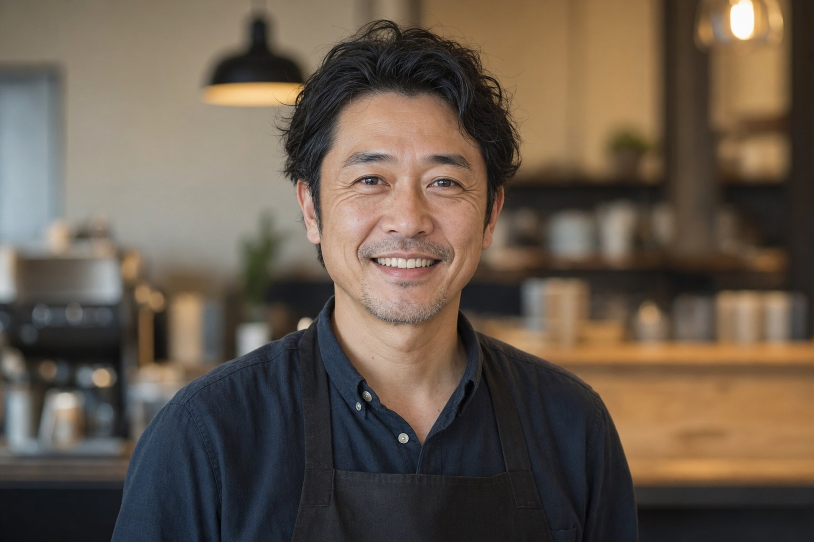

Our Story
地元への想いから、
始まったカフェ。
新潟に生まれ、新潟で育ちました。農家を営む親戚のもとで幼少期を過ごすなかで、採れたての野菜の甘さに何度も驚かされてきました。
「この美味しさを、もっと多くの人に知ってほしい」。地元農家さんと話し合いを重ね、2019年にこのカフェを開きました。素材の良さをシンプルに伝えること。地元の方が気軽に立ち寄れる場所であること。それだけを、ずっと大切にしています。
コーヒーも、農家さんとの向き合い方も、一杯一皿に誠実でいたいと思っています。
— 店主 五十嵐 哲也